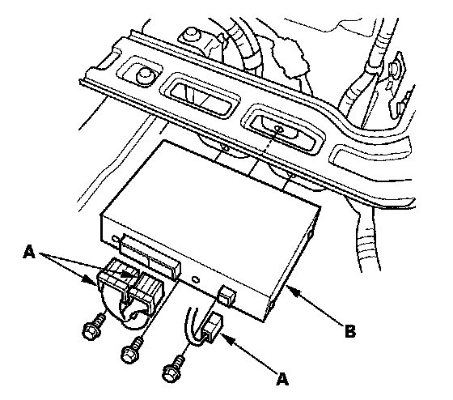

Acuralink Control Unit (XM Receiver) Removal/Installation
AcuraLink Control Unit (XM Receiver) Removal/InstallationWith AcuraLink:
NOTE: The AcuraLink must be reactivated by Acura
Client Services when:
- The AcuraLink control unit (XM receiver) is replaced.
- DATA RESET was selected while in the self-diagnostic function.
- Vehicle ownership changes.
1. Remove the right rear side trim panel.

2. Disconnect the connectors (A), then remove the bolts and pull out the AcuraLink control unit (XM receiver) (B).
3. Install the AcuraLink control unit (XM receiver) in the reverse order of removal.